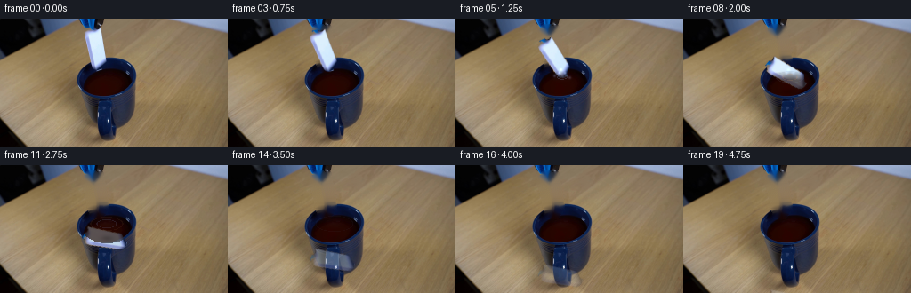
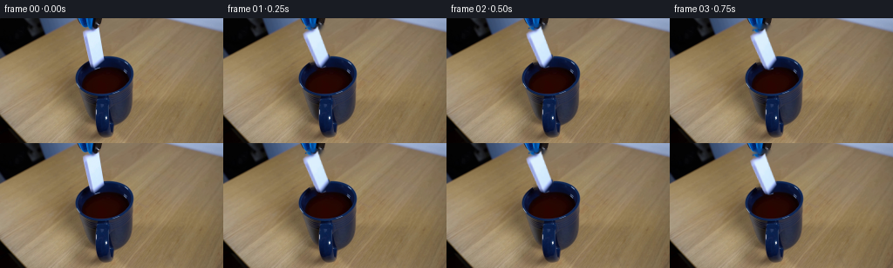
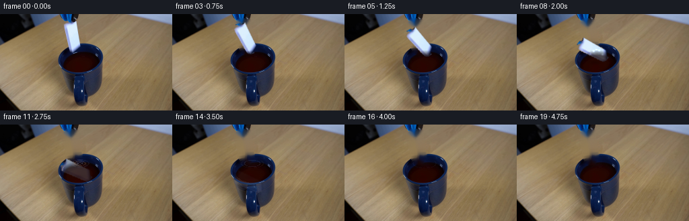
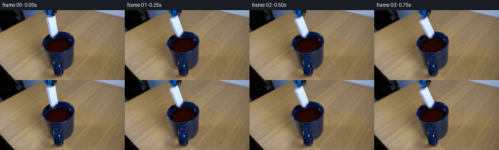

← 本轮 smoke 总览traex/DeepSeek-V4.1-Flash · 0048
text · 256×144 · 4.0 FPS · 20 帧 · 状态 complete · 输出 tokens 50120
原始任务Static locked-off single-shot with fixed frame throughout filmed with constant framerate in real-time. The scene shows a realistic scientific demonstration. The scene only contains the described setup and actions. The mug is sitting on a wooden surface. The blue-black grabber tool drops the white ceramic domino into the mug that is filled with a dark-colored liquid.
当前保存结果
已保存候选与代码修改
这里按时间展示外部捕获的候选，每份均可单独播放。保存新版本不等于完成视觉检查；下方工具证据记录实际看过的图。
候选 01 · 2026-11-09T00:44:17.893343+00:00 · 点开播放与检查图
inspection.png

transition_check.png

代码变化
--- 上一保存版本
+++ 本次保存版本
@@ -0,0 +1,220 @@
+from pathlib import Path
+
+import cv2
+import numpy as np
+from PIL import Image
+
+import artifact_io
+
+
+ROOT = Path(__file__).resolve().parent
+W, H, N, FPS = 256, 144, 20, 4
+
+
+def smoothstep(x):
+ x = np.clip(x, 0.0, 1.0)
+ return x * x * (3.0 - 2.0 * x)
+
+
+def make_plate(src):
+ """Remove the held domino while retaining the camera and lighting."""
+ polygon = np.array(
+ [[100, 9], [115, 10], [120, 48], [117, 57], [102, 57], [93, 15]],
+ dtype=np.int32,
+ )
+ polygon_mask = np.zeros((H, W), np.uint8)
+ cv2.fillPoly(polygon_mask, [polygon], 255)
+
+ rgb = src.astype(np.int16)
+ chroma = rgb[:, :, 2] - rgb[:, :, 0]
+ value = rgb.max(axis=2)
+ domino_hint = (
+ (polygon_mask > 0)
+ & (chroma > -23)
+ & (value > 102)
+ ).astype(np.uint8) * 255
+ domino_hint = cv2.morphologyEx(
+ domino_hint, cv2.MORPH_CLOSE, np.ones((3, 3), np.uint8), iterations=2
+ )
+
+ removal = cv2.dilate(domino_hint, np.ones((3, 3), np.uint8), iterations=1)
+ removal = cv2.GaussianBlur(removal, (5, 5), 0.8)
+ removal = np.maximum(removal, polygon_mask)
+ plate = cv2.inpaint(src, removal, 5, cv2.INPAINT_TELEA)
+
+ # The small amount of original domino visible above the release is already
+ # part of the source scene. Preserve it for the first held frames.
+ return plate, polygon_mask, domino_hint
+
+
+def make_sprite(src, domino_hint):
+ """Extract the piece as a soft-edged RGBA source patch."""
+ sprite_mask = cv2.morphologyEx(
+ domino_hint, cv2.MORPH_CLOSE, np.ones((3, 3), np.uint8), iterations=1
+ )
+ sprite_mask = cv2.GaussianBlur(sprite_mask, (3, 3), 0.55)
+ alpha = sprite_mask.astype(np.float32) / 255.0
+
+ ys, xs = np.where(sprite_mask > 40)
+ x0, x1 = int(xs.min()) - 2, int(xs.max()) + 3
+ y0, y1 = int(ys.min()) - 2, int(ys.max()) + 3
+ sprite = src[y0:y1, x0:x1].astype(np.float32)
+ alpha = alpha[y0:y1, x0:x1]
+
+ # Fill tiny highlights lost by the color gate while retaining a clean edge.
+ closed = cv2.morphologyEx(
+ (alpha > 0.2).astype(np.uint8), cv2.MORPH_CLOSE, np.ones((3, 3), np.uint8)
+ )
+ alpha = np.maximum(alpha, cv2.GaussianBlur(closed, (3, 3), 0.45).astype(np.float32))
+ return sprite, alpha, (x0, y0, x1, y1)
+
+
+def warp_sprite(sprite, alpha, center, angle_deg, scale=1.0):
+ h, w = alpha.shape
+ src_center = np.array([(w - 1) * 0.5, (h - 1) * 0.5], np.float32)
+ matrix = cv2.getRotationMatrix2D(tuple(src_center), angle_deg, scale)
+ matrix[:, 2] += np.array(center, np.float32) - src_center
+ warped = cv2.warpAffine(
+ sprite, matrix, (W, H), flags=cv2.INTER_LINEAR, borderMode=cv2.BORDER_CONSTANT
+ )
+ warped_alpha = cv2.warpAffine(
+ alpha, matrix, (W, H), flags=cv2.INTER_LINEAR, borderMode=cv2.BORDER_CONSTANT
+ )
+ return warped, np.clip(warped_alpha, 0.0, 1.0)
+
+
+def liquid_mask():
+ yy, xx = np.mgrid[0:H, 0:W]
+ ellipse = ((xx - 120.0) / 27.5) ** 2 + ((yy - 71.0) / 16.5) ** 2
+ return ellipse <= 1.0
+
+
+def add_liquid_motion(frame, frame_index):
+ """Add restrained impact rings and a few reflected droplets."""
+ out = frame.astype(np.float32)
+ t = max(0.0, (frame_index - 4) / FPS)
+ if frame_index < 4:
+ return frame
+
+ yy, xx = np.mgrid[0:H, 0:W]
+ inner = liquid_mask()
+ impact_x, impact_y = 119.5, 65.5
+
+ # A soft disturbance makes the liquid surface read as a reflective plane.
+ disturbance = 0.65 * np.exp(-((xx - impact_x) ** 2 / 90.0 + (yy - impact_y) ** 2 / 22.0))
+ disturbance *= np.clip(1.25 - t * 0.17, 0.25, 1.0)
+ blue = np.array([77.0, 91.0, 126.0], np.float32)
+ brown = np.array([104.0, 60.0, 31.0], np.float32)
+ tint = blue * 0.54 + brown * 0.46
+ out += inner[:, :, None] * disturbance[:, :, None] * (tint - out) * 0.11
+
+ for ring_index in range(3):
+ birth = 4.0 + ring_index * 2.15
+ age = (frame_index - birth) / FPS
+ if age < 0.0 or age > 1.9:
+ continue
+ radius = 2.2 + 13.0 * age
+ opacity = 0.29 * (1.0 - age / 1.9) ** 1.35
+ ring = (
+ np.abs(np.sqrt(((xx - impact_x) / 1.0) ** 2 + ((yy - impact_y) / 0.42) ** 2) - radius)
+ < 0.75
+ )
+ ring &= inner
+ cool = np.array([116.0, 138.0, 179.0], np.float32)
+ warm = np.array([180.0, 131.0, 87.0], np.float32)
+ ring_color = cool if ring_index != 1 else warm
+ out[ring] = out[ring] * (1.0 - opacity) + ring_color * opacity
+
+ # Small highlights make the impact legible without changing the scene.
+ if 4 <= frame_index <= 9:
+ life = np.clip(1.0 - (frame_index - 4) / 6.0, 0.0, 1.0)
+ highlights = [
+ (116, 61, 0.55), (123, 61, 0.48), (111, 64, 0.38),
+ (128, 66, 0.32), (118, 57, 0.42),
+ ]
+ for cx, cy, strength in highlights:
+ radius = 2.6 - life * 1.2
+ glow = np.exp(-((xx - cx) ** 2 + (yy - cy) ** 2) / (radius * radius))
+ glow *= inner
+ out += glow[:, :, None] * np.array([120.0, 142.0, 182.0]) * (strength * life)
+
+ return np.clip(out, 0, 255).astype(np.uint8)
+
+
+def composite_piece(plate, sprite, alpha, frame_index):
+ if frame_index == 0:
+ return plate
+
+ # The tool releases just after the held opening beat.
+ release = smoothstep((frame_index - 1.2) / 2.8)
+ fall = np.array([0.0, 0.0])
+ if frame_index >= 2:
+ u = max(0.0, (frame_index - 2.0) / 9.5)
+ fall[1] = 54.0 * (u ** 1.38)
+ fall[0] = 11.5 * smoothstep(u * 1.08)
+
+ # Rotation follows the fall, with a little liquid drag near entry.
+ angle = 11.0 + 58.0 * smoothstep(max(0.0, (frame_index - 2.5) / 9.0))
+ center = np.array([106.4, 33.0]) + fall
+ center[0] += 1.4 * np.sin(min(1.0, max(0.0, (frame_index - 2.0) / 7.0)) * np.pi)
+
+ # A short initial drift gives the release a natural, non-linear onset.
+ if frame_index == 1:
+ center[1] += 0.35 * release
+
+ warped, warped_alpha = warp_sprite(sprite, alpha, center, angle)
+
+ out = plate.astype(np.float32)
+ yy, xx = np.mgrid[0:H, 0:W]
+ surface = 58.0 + 5.0 * ((xx - 120.0) / 28.0) ** 2
+ below = np.clip((yy - surface) / 10.0, 0.0, 1.0)
+ below *= liquid_mask().astype(np.float32)
+
+ piece = warped.copy()
+ submerged = np.array([53.0, 44.0, 39.0], np.float32)
+ piece = piece * (1.0 - below[:, :, None] * 0.67) + submerged * (below[:, :, None] * 0.67)
+ piece = cv2.GaussianBlur(piece, (3, 3), 0.38)
+
+ a = warped_alpha * (1.0 - 0.18 * below)
+ if frame_index >= 11:
+ a *= np.clip(1.0 - (frame_index - 10.5) / 5.2, 0.18, 1.0)
+ out = out * (1.0 - a[:, :, None]) + piece * a[:, :, None]
+
+ # A tight contact shadow on the liquid tracks the submerged body.
+ if frame_index >= 4:
+ cx = center[0] + 2.0
+ cy = min(82.0, center[1] + 21.0)
+ shadow = np.exp(-((xx - cx) ** 2 / 55.0 + (yy - cy) ** 2 / 11.0))
+ shadow *= liquid_mask()
+ strength = 0.20 * np.clip(1.0 - max(0, frame_index - 10) / 10.0, 0.0, 1.0)
+ out *= 1.0 - shadow[:, :, None] * strength
+
+ return np.clip(out, 0, 255).astype(np.uint8)
+
+
+def main():
+ src = np.asarray(Image.open(ROOT / "first_frame.png").convert("RGB"), dtype=np.uint8)
+ plate, polygon_mask, domino_hint = make_plate(src)
+ sprite, alpha, _ = make_sprite(src, domino_hint)
+
+ frames = []
+ for index in range(N):
+ if index == 0:
+ frame = src.copy()
+ else:
+ frame = composite_piece(plate, sprite, alpha, index)
+ frame = add_liquid_motion(frame, index)
+ frames.append(frame)
+
+ frames = np.stack(frames, axis=0)
+ assert frames.shape == (N, H, W, 3) and frames.dtype == np.uint8
+ assert np.array_equal(frames[0], src)
+ artifact_io.save(frames, ROOT)
+
+ Image.fromarray(sprite.astype(np.uint8)).save(ROOT / ".tmp" / "sprite_rgb.png")
+ Image.fromarray(np.round(alpha * 255).astype(np.uint8)).save(ROOT / ".tmp" / "sprite_alpha.png")
+ Image.fromarray(plate).save(ROOT / ".tmp" / "clean_plate.png")
+
+
+if __name__ == "__main__":
+ main()
候选 02 · 2026-11-09T00:45:35.792370+00:00 · 点开播放与检查图
inspection.png

transition_check.png

代码变化
--- 上一保存版本
+++ 本次保存版本
@@ -83,22 +83,26 @@
return warped, np.clip(warped_alpha, 0.0, 1.0)
+LIQUID_CX, LIQUID_CY = 120.0, 69.0
+LIQUID_RX, LIQUID_RY = 27.0, 17.5
+
+
def liquid_mask():
yy, xx = np.mgrid[0:H, 0:W]
- ellipse = ((xx - 120.0) / 27.5) ** 2 + ((yy - 71.0) / 16.5) ** 2
+ ellipse = ((xx - LIQUID_CX) / LIQUID_RX) ** 2 + ((yy - LIQUID_CY) / LIQUID_RY) ** 2
return ellipse <= 1.0
def add_liquid_motion(frame, frame_index):
"""Add restrained impact rings and a few reflected droplets."""
out = frame.astype(np.float32)
- t = max(0.0, (frame_index - 4) / FPS)
- if frame_index < 4:
+ t = max(0.0, (frame_index - 7) / FPS)
+ if frame_index < 7:
return frame
yy, xx = np.mgrid[0:H, 0:W]
inner = liquid_mask()
- impact_x, impact_y = 119.5, 65.5
+ impact_x, impact_y = 118.5, 57.5
# A soft disturbance makes the liquid surface read as a reflective plane.
disturbance = 0.65 * np.exp(-((xx - impact_x) ** 2 / 90.0 + (yy - impact_y) ** 2 / 22.0))
@@ -109,11 +113,11 @@
out += inner[:, :, None] * disturbance[:, :, None] * (tint - out) * 0.11
for ring_index in range(3):
- birth = 4.0 + ring_index * 2.15
+ birth = 7.0 + ring_index * 1.8
age = (frame_index - birth) / FPS
if age < 0.0 or age > 1.9:
continue
- radius = 2.2 + 13.0 * age
+ radius = 2.0 + 11.0 * age
opacity = 0.29 * (1.0 - age / 1.9) ** 1.35
ring = (
np.abs(np.sqrt(((xx - impact_x) / 1.0) ** 2 + ((yy - impact_y) / 0.42) ** 2) - radius)
@@ -126,11 +130,11 @@
out[ring] = out[ring] * (1.0 - opacity) + ring_color * opacity
# Small highlights make the impact legible without changing the scene.
- if 4 <= frame_index <= 9:
- life = np.clip(1.0 - (frame_index - 4) / 6.0, 0.0, 1.0)
+ if 7 <= frame_index <= 11:
+ life = np.clip(1.0 - (frame_index - 7) / 5.0, 0.0, 1.0)
highlights = [
- (116, 61, 0.55), (123, 61, 0.48), (111, 64, 0.38),
- (128, 66, 0.32), (118, 57, 0.42),
+ (114, 55, 0.55), (122, 54, 0.48), (109, 59, 0.38),
+ (127, 60, 0.32), (118, 52, 0.42),
]
for cx, cy, strength in highlights:
radius = 2.6 - life * 1.2
@@ -146,47 +150,46 @@
return plate
# The tool releases just after the held opening beat.
- release = smoothstep((frame_index - 1.2) / 2.8)
fall = np.array([0.0, 0.0])
- if frame_index >= 2:
- u = max(0.0, (frame_index - 2.0) / 9.5)
- fall[1] = 54.0 * (u ** 1.38)
- fall[0] = 11.5 * smoothstep(u * 1.08)
+ if frame_index >= 1:
+ u = max(0.0, (frame_index - 1.0) / 8.0)
+ fall[1] = 25.5 * (u ** 1.52)
+ fall[0] = 6.8 * smoothstep(u * 1.10)
# Rotation follows the fall, with a little liquid drag near entry.
- angle = 11.0 + 58.0 * smoothstep(max(0.0, (frame_index - 2.5) / 9.0))
+ angle = 11.0 + 43.0 * smoothstep(max(0.0, (frame_index - 1.2) / 8.2))
center = np.array([106.4, 33.0]) + fall
- center[0] += 1.4 * np.sin(min(1.0, max(0.0, (frame_index - 2.0) / 7.0)) * np.pi)
-
- # A short initial drift gives the release a natural, non-linear onset.
- if frame_index == 1:
- center[1] += 0.35 * release
+ center[0] += 1.1 * np.sin(min(1.0, max(0.0, (frame_index - 1.0) / 7.0)) * np.pi)
warped, warped_alpha = warp_sprite(sprite, alpha, center, angle)
out = plate.astype(np.float32)
yy, xx = np.mgrid[0:H, 0:W]
- surface = 58.0 + 5.0 * ((xx - 120.0) / 28.0) ** 2
- below = np.clip((yy - surface) / 10.0, 0.0, 1.0)
- below *= liquid_mask().astype(np.float32)
+ liquid = liquid_mask()
+ surface = 53.5 + 7.5 * ((xx - LIQUID_CX) / LIQUID_RX) ** 2
+ below = np.clip((yy - surface) / 8.0, 0.0, 1.0)
+ below *= liquid.astype(np.float32)
piece = warped.copy()
- submerged = np.array([53.0, 44.0, 39.0], np.float32)
- piece = piece * (1.0 - below[:, :, None] * 0.67) + submerged * (below[:, :, None] * 0.67)
+ submerged = np.array([42.0, 37.0, 40.0], np.float32)
+ piece = piece * (1.0 - below[:, :, None] * 0.72) + submerged * (below[:, :, None] * 0.72)
piece = cv2.GaussianBlur(piece, (3, 3), 0.38)
- a = warped_alpha * (1.0 - 0.18 * below)
- if frame_index >= 11:
- a *= np.clip(1.0 - (frame_index - 10.5) / 5.2, 0.18, 1.0)
+ # Below the surface the liquid hides most of the body, and the lower edge
+ # is occluded by the mug's front rim.
+ a = warped_alpha * (1.0 - 0.27 * below)
+ a *= np.where(liquid | (below < 0.05), 1.0, 0.0)
+ if frame_index >= 9:
+ a *= np.clip(1.0 - (frame_index - 8.6) / 6.0, 0.0, 1.0)
out = out * (1.0 - a[:, :, None]) + piece * a[:, :, None]
# A tight contact shadow on the liquid tracks the submerged body.
- if frame_index >= 4:
+ if frame_index >= 7:
cx = center[0] + 2.0
- cy = min(82.0, center[1] + 21.0)
+ cy = min(78.0, center[1] + 18.0)
shadow = np.exp(-((xx - cx) ** 2 / 55.0 + (yy - cy) ** 2 / 11.0))
shadow *= liquid_mask()
- strength = 0.20 * np.clip(1.0 - max(0, frame_index - 10) / 10.0, 0.0, 1.0)
+ strength = 0.20 * np.clip(1.0 - max(0, frame_index - 9) / 10.0, 0.0, 1.0)
out *= 1.0 - shadow[:, :, None] * strength
return np.clip(out, 0, 255).astype(np.uint8)
候选 03 · 2026-11-09T00:45:37.831207+00:00 · 点开播放与检查图
inspection.png

transition_check.png

代码变化
代码未变化；重新保存了产物。
可观测工具行为
命令 1 · 2026-11-09T00:39:48.555923+00:00/bin/bash -c "sed -n '1,240p' prompt.txt"
exit 0 命令 2 · 2026-11-09T00:39:48.734608+00:00/bin/bash -c "sed -n '1,280p' GENERATION_RULES.md"
exit 0 命令 3 · 2026-11-09T00:39:49.170442+00:00/bin/bash -c "printf 'FILES\\n'; rg --files -g '"'!*.mp4'"' -g '"'!*.mov'"' | sed -n '1,240p'; printf '\\nTOOLS\\n'; command -v ffmpeg; command -v python3; command -v magick; command -v convert; printf '\\nIMAGE\\n'; file first_frame.png; identify first_frame.png 2>/dev/null || true"
exit 0 命令 4 · 2026-11-09T00:39:56.452812+00:00/bin/bash -c "sed -n '1,260p' artifact_io.py"
exit 0 命令 5 · 2026-11-09T00:39:56.789084+00:00/bin/bash -c "sed -n '1,260p' player_template.html"
exit 0 命令 6 · 2026-11-09T00:39:57.001788+00:00/bin/bash -c "python3 - <<'PY'
from PIL import Image
import numpy as np
im=Image.open('first_frame.png')
print(im.mode, im.size, im.format)
a=np.asarray(im.convert('RGB'))
print('shape',a.shape,'dtype',a.dtype,'minmax',a.min(),a.max())
print('corners',a[0,0],a[0,-1],a[-1,0],a[-1,-1])
# coarse 8x8 block average RGB
for y in range(0,144,16):
row=[]
for x in range(0,256,16):
c=a[y:y+16,x:x+16].mean((0,1)).round().astype(int)
row.append(f'{c[0]:02x}{c[1]:02x}{c[2]:02x}')
print(y, ' '.join(row))
PY"exit 0 命令 7 · 2026-11-09T00:39:57.180533+00:00/bin/bash -c "python3 - <<'PY'
import importlib.util
for m in ['PIL','numpy','cv2','imageio','scipy','skimage']:
print(m, bool(importlib.util.find_spec(m)))
PY"
exit 0 命令 8 · 2026-11-09T00:40:04.530509+00:00/bin/bash -c "python3 - <<'PY'
import cv2, numpy as np
im=cv2.imread('first_frame.png')
g=cv2.cvtColor(im,cv2.COLOR_BGR2GRAY)
# edge map 2x2 blocks, chars by max gradient
e=cv2.Canny(g,35,90)
chars=' .:-=+*#%@'
for y in range(0,144,2):
line=''
for x in range(0,256,2):
v=(e[y:y+2,x:x+2]>0).mean()
line+=chars[min(9,int(round(v*9)))]
print(f'{y:03d} '+line)
PY"exit 0 命令 9 · 2026-11-09T00:40:12.056645+00:00/bin/bash -c "python3 - <<'PY'
from PIL import Image
import numpy as np, cv2
rgb=np.array(Image.open('first_frame.png').convert('RGB'))
hsv=cv2.cvtColor(rgb,cv2.COLOR_RGB2HSV)
# categories via HSV and luminance
for y in range(0,144,2):
line=''
for x in range(0,256,2):
p=rgb[y:y+2,x:x+2].mean(0); h,s,v=hsv[y:y+2,x:x+2].mean(0)
r,g,b=p
if v<22: c=' '
elif v<42: c='.'
elif s<35 and v>170: c='W'
elif s<35 and v>105: c='w'
elif (h<18 or h>170) and s>80: c='R'
elif 80<h<145 and s>45: c='B'
elif 20<h<50 and s>55: c='T'
elif 50<h<80 and s>45: c='Y'
elif v>140: c='+'
elif v>90: c='-'
else: c=':'
line+=c
print(f'{y:03d} '+line)
PY"exit 1 命令 10 · 2026-11-09T00:40:16.545853+00:00/bin/bash -c "python3 - <<'PY'
from PIL import Image
import numpy as np, cv2
rgb=np.array(Image.open('first_frame.png').convert('RGB'))
hsv=cv2.cvtColor(rgb,cv2.COLOR_RGB2HSV)
for y in range(0,144,2):
line=''
for x in range(0,256,2):
p=rgb[y:y+2,x:x+2].mean(0); h,s,v=hsv[y:y+2,x:x+2].mean(0)
r,g,b=p
if v<22: c=' '
elif v<42: c='.'
elif s<35 and v>170: c='W'
elif s<35 and v>105: c='w'
elif (h<18 or h>170) and s>80: c='R'
elif 80<h<145 and s>45: c='B'
elif 20<h<50 and s>55: c='T'
elif 50<h<80 and s>45: c='Y'
elif v>140: c='+'
elif v>90: c='-'
else: c=':'
line+=c
print(f'{y:03d} '+line)
PY"exit 1 命令 11 · 2026-11-09T00:40:21.460334+00:00/bin/bash -c "python3 - <<'PY'
from PIL import Image
import numpy as np, cv2
rgb=np.array(Image.open('first_frame.png').convert('RGB'))
hsv=cv2.cvtColor(rgb,cv2.COLOR_RGB2HSV)
for y in range(0,144,2):
line=''
for x in range(0,256,2):
p=rgb[y:y+2,x:x+2].mean((0,1)); h,s,v=hsv[y:y+2,x:x+2].mean((0,1))
if v<22: c=' '
elif v<42: c='.'
elif s<35 and v>170: c='W'
elif s<35 and v>105: c='w'
elif (h<18 or h>170) and s>80: c='R'
elif 80<h<145 and s>45: c='B'
elif 20<h<50 and s>55: c='T'
elif 50<h<80 and s>45: c='Y'
elif v>140: c='+'
elif v>90: c='-'
else: c=':'
line+=c
print(f'{y:03d} '+line)
PY"exit 0 命令 12 · 2026-11-09T00:40:33.381494+00:00/bin/bash -c "python3 - <<'PY'
from PIL import Image
import numpy as np, cv2
rgb=np.array(Image.open('first_frame.png').convert('RGB'))
# kmeans in Lab on 4x downsample for representative palette
lab=cv2.cvtColor(rgb,cv2.COLOR_RGB2LAB).reshape(-1,3).astype(np.float32)
crit=(cv2.TERM_CRITERIA_EPS+cv2.TERM_CRITERIA_MAX_ITER,100,0.2)
_,labels,centers=cv2.kmeans(lab,10,None,crit,10,cv2.KMEANS_PP_CENTERS)
centers_rgb=cv2.cvtColor(np.uint8(centers.reshape(1,-1,3)),cv2.COLOR_LAB2RGB).reshape(-1,3)
counts=np.bincount(labels.ravel())
for i in np.argsort(counts)[::-1]:
mask=(labels.reshape(rgb.shape[:2])==i).astype(np.uint8)
ys,xs=np.where(mask)
print(i,counts[i],centers_rgb[i], 'bbox', (xs.min(),ys.min(),xs.max(),ys.max()))
PY"exit 0 命令 13 · 2026-11-09T00:40:37.236551+00:00/bin/bash -c "python3 - <<'PY'
import cv2, numpy as np
im=cv2.imread('first_frame.png')
g=cv2.cvtColor(im,cv2.COLOR_BGR2GRAY)
# Hough lines
edges=cv2.Canny(g,40,100)
lines=cv2.HoughLinesP(edges,1,np.pi/180,30,minLineLength=25,maxLineGap=4)
for l in sorted(lines[:,0].tolist(), key=lambda p: -(p[2]-p[0])**2-(p[3]-p[1])**2)[:30]: print(l)
PY"exit 0 命令 14 · 2026-11-09T00:40:46.639023+00:00/bin/bash -c "python3 - <<'PY'
import cv2, numpy as np
rgb=cv2.cvtColor(cv2.imread('first_frame.png'),cv2.COLOR_BGR2RGB)
r,g,b=[rgb[:,:,i].astype(int) for i in range(3)]
masks={
'blue':(b>r+18)&(b>g+5)&(b>35),
'darkblue':(b>r+10)&(b<100)&(r<55),
'white':(r>150)&(g>150)&(b>150)&(np.max(rgb,2)-np.min(rgb,2)<40),
'dark':(r+g+b<110),
'verydark':(r+g+b<55),
'liquid':(r<55)&(g<45)&(b<35),
}
for name,m in masks.items():
n,lab,stats,cents=cv2.connectedComponentsWithStats(m.astype('uint8'),8)
comps=sorted([(s[4],tuple(s[:4]),tuple(np.round(c,1))) for s,c in zip(stats[1:],cents[1:])],reverse=True)
print('\\n',name,'count',m.sum())
for c in comps[:12]: print(c)
PY"exit 0 命令 15 · 2026-11-09T00:40:51.991407+00:00/bin/bash -c "python3 - <<'PY'
from PIL import Image
import numpy as np
a=np.array(Image.open('first_frame.png').convert('RGB'))
# print region map using colors quantized to labels manually, 1 char/pixel, region x 70..190 y 0..143
# chars based on intensity/saturation/hue
import cv2
hsv=cv2.cvtColor(a,cv2.COLOR_RGB2HSV)
for y in range(0,144,1):
s=''
for x in range(70,191,1):
r,g,b=map(int,a[y,x]); h,sa,v=map(int,hsv[y,x])
if max(r,g,b)<20: c=' '
elif max(r,g,b)<42: c='.'
elif sa<35 and v>175: c='W'
elif sa<35 and v>125: c='w'
elif sa<35 and v>80: c='o'
elif 80<h<145 and sa>50: c='B'
elif (h<18 or h>170) and sa>80: c='r'
elif 20<h<50 and sa>60: c='t'
elif 50<h<80 and sa>55: c='y'
elif v>150: c='+'
elif v>105: c='-'
else: c=':'
s+=c
print(f'{y:03d} {s}')
PY"exit 0 命令 16 · 2026-11-09T00:41:14.741322+00:00/bin/bash -c "python3 - <<'PY'
from PIL import Image
import numpy as np, cv2
a=np.array(Image.open('first_frame.png').convert('RGB'))
for y in range(6,51):
s=''
for x in range(86,129):
r,g,b=map(int,a[y,x]); v=max(r,g,b)
# compact luminance, mark white/gray/blue/dark
if v>=190 and max(r,g,b)-min(r,g,b)<55: c='W'
elif v>=140 and max(r,g,b)-min(r,g,b)<55: c='w'
elif v>=95: c='+'
elif v>=60: c='-'
elif v>=35: c=':'
elif v>=18: c='.'
else: c=' '
s+=c
print(f'{y:03d} {s}')
print(' '+''.join(str(x//100%10) for x in range(86,129)))
print(' '+''.join(str(x//10%10) for x in range(86,129)))
print(' '+''.join(str(x%10) for x in range(86,129)))
PY"exit 0 命令 17 · 2026-11-09T00:41:19.350201+00:00/bin/bash -c "python3 - <<'PY'
from PIL import Image
import numpy as np, cv2
a=np.array(Image.open('first_frame.png').convert('RGB'))
# classify grabber blue-black region by lab pixel sample and contours. HSV
hsv=cv2.cvtColor(a,cv2.COLOR_RGB2HSV)
for name, mask in {
'grab_blue': ((hsv[:,:,0]>=88)&(hsv[:,:,0]<=130)&(hsv[:,:,1]>55)&(hsv[:,:,2]<105)).astype('uint8'),
'grab_black': ((hsv[:,:,2]<60)&(np.indices(hsv.shape[:2])[1]>85)&(np.indices(hsv.shape[:2])[1]<160)).astype('uint8')
}.items():
n,lab,stats,cents=cv2.connectedComponentsWithStats(mask,8)
print(name)
for s,c in sorted(zip(stats[1:],cents[1:]),key=lambda x:-x[0,4])[:20]: print(tuple(s),tuple(np.round(c,1)))
PY"exit 1 命令 18 · 2026-11-09T00:41:23.749633+00:00/bin/bash -c "python3 - <<'PY'
from PIL import Image
import numpy as np, cv2
a=np.array(Image.open('first_frame.png').convert('RGB'))
hsv=cv2.cvtColor(a,cv2.COLOR_RGB2HSV); yy,xx=np.indices(hsv.shape[:2])
for name, mask in {
'grab_blue': ((hsv[:,:,0]>=88)&(hsv[:,:,0]<=130)&(hsv[:,:,1]>55)&(hsv[:,:,2]<105)).astype('uint8'),
'grab_black': ((hsv[:,:,2]<60)&(xx>85)&(xx<160)).astype('uint8')
}.items():
n,lab,stats,cents=cv2.connectedComponentsWithStats(mask,8)
print(name)
for i in np.argsort(stats[1:,4])[::-1][:20]:
s=stats[i+1]; c=cents[i+1]
print(tuple(s),tuple(np.round(c,1)))
PY"exit 0 命令 19 · 2026-11-09T00:41:28.573904+00:00/bin/bash -c "python3 - <<'PY'
import cv2, numpy as np
from PIL import Image
a=np.array(Image.open('first_frame.png').convert('RGB'))
hsv=cv2.cvtColor(a,cv2.COLOR_RGB2HSV)
# For y rows inspect hue/rgb clusters around gripper and domino
for y in [8,12,16,20,24,28,32,36,40,44,48,52,56,60,64,68,72,76,80,84,88,92,96,100,104,108,112,116,120,124,128,132,136,140]:
# segments by color classes within x 85..156
seg=[]
for x in range(85,157):
r,g,b=map(int,a[y,x]); h,s,v=map(int,hsv[y,x])
if max(r,g,b)<20: c=' '
elif max(r,g,b)<45: c='.'
elif s<35 and v>175: c='W'
elif s<35 and v>120: c='w'
elif 80<h<145 and s>50: c='B'
elif (h<18 or h>170) and s>80: c='r'
elif 20<h<50 and s>60: c='t'
elif 50<h<80 and s>55: c='y'
elif v>150: c='+'
elif v>105: c='-'
else: c=':'
seg.append(c)
print(f'{y:03d} '+''.join(seg))
PY"exit 0 命令 20 · 2026-11-09T00:41:33.552723+00:00/bin/bash -c "python3 - <<'PY'
from PIL import Image
import numpy as np, cv2
a=np.array(Image.open('first_frame.png').convert('RGB'))
# Save enlarged crops and contact sheet as temp inspection
for name,box in [('grabber',(80,0,175,90)),('mug',(85,35,165,144)),('domino',(88,8,124,55)),('left',(0,0,100,144))]:
x0,y0,x1,y1=box
Image.fromarray(a[y0:y1,x0:x1]).resize(((x1-x0)*5,(y1-y0)*5),Image.Resampling.NEAREST).save(f'.tmp/{name}.png')
# print contour of dark grabber region with sampling thresholds
hsv=cv2.cvtColor(a,cv2.COLOR_RGB2HSV)
mask=((hsv[:,:,2]<70)&(np.indices(hsv.shape[:2])[1]>80)&(np.indices(hsv.shape[:2])[1]<160)&(np.indices(hsv.shape[:2])[0]>38)&(np.indices(hsv.shape[:2])[0]<90)).astype('uint8')
for y in range(38,92):
xs=np.where(mask[y])[0]
if len(xs): print(y, xs.min(),xs.max(),len(xs))
PY"exit 0 命令 21 · 2026-11-09T00:41:37.897142+00:00/bin/bash -c "python3 - <<'PY'
from PIL import Image
import numpy as np, cv2
a=np.array(Image.open('first_frame.png').convert('RGB'))
hsv=cv2.cvtColor(a,cv2.COLOR_RGB2HSV)
# Grabber as blue pixels; list x extents per row
mask=((hsv[:,:,0]>=88)&(hsv[:,:,0]<=140)&(hsv[:,:,1]>35)&(hsv[:,:,2]<125)).astype('uint8')
for y in range(0,110):
xs=np.where(mask[y,80:175])[0]+80
if len(xs)>=2:
# groups
d=np.diff(xs); grp=np.split(xs,np.where(d>1)[0]+1)
print(f'{y:03d}', ' '.join(f'{g.min()}-{g.max()}' for g in grp if len(g)>1))
PY"exit 0 命令 22 · 2026-11-09T00:41:41.996510+00:00/bin/bash -c "python3 - <<'PY'
from PIL import Image
import numpy as np, cv2
a=np.array(Image.open('first_frame.png').convert('RGB'))
# white mask specifically to derive domino geometry, using Y and chroma
Y=cv2.cvtColor(a,cv2.COLOR_RGB2GRAY)
mask=((Y>145)&(np.max(a,2).astype(int)-np.min(a,2).astype(int)<65)).astype('uint8')
for y in range(5,65):
xs=np.where(mask[y,85:130])[0]+85
if len(xs):
print(y, xs.min(),xs.max(),len(xs))
PY"exit 0 命令 23 · 2026-11-09T00:41:45.884377+00:00/bin/bash -c "python3 - <<'PY'
from PIL import Image
import numpy as np
a=np.array(Image.open('first_frame.png').convert('RGB'))
# Print RGB around presumed white domino rows as hex every pixel x 90..125 at key rows
for y in [12,14,16,18,20,24,28,32,36,40,44,48,50,52,54,56,58,60]:
print('y',y)
for x in range(90,126):
r,g,b=a[y,x]
if max(r,g,b)>100: print(x, f'{r:3d},{g:3d},{b:3d}',end=' | ')
print()
PY"exit 0 命令 24 · 2026-11-09T00:41:55.872391+00:00/bin/bash -c "ls -la; find . -maxdepth 2 -type f -printf '%p %s bytes\\n' | sort"
exit 0 命令 25 · 2026-11-09T00:42:00.211532+00:00/bin/bash -c "python3 - <<'PY'
from PIL import Image
import numpy as np
a=np.array(Image.open('first_frame.png').convert('RGB'))
# print small thumbnails by symbol from luminance and channel signature, 2px blocks x 0..175 y 0..143
for y in range(0,144,3):
s=''
for x in range(0,180,2):
p=a[y:y+3,x:x+2].mean((0,1)); r,g,b=p; v=p.mean()
if v<25: c=' '
elif v<45: c='.'
elif b>r+15: c='B'
elif v>165: c='W'
elif v>125: c='+'
elif v>85: c='-'
else: c=':'
s+=c
print(f'{y:03d} {s}')
PY"exit 0 命令 26 · 2026-11-09T00:42:41.478681+00:00/bin/bash -c "python3 - <<'PY'
from PIL import Image
import numpy as np, cv2
a=np.array(Image.open('first_frame.png').convert('RGB'))
for y in range(0,18):
print('y',y, ' '.join(f'{x}:{a[y,x,0]},{a[y,x,1]},{a[y,x,2]}' for x in range(90,122)))
PY"exit 0 命令 27 · 2026-11-09T00:42:54.540923+00:00/bin/bash -c "python3 - <<'PY'
from PIL import Image
import numpy as np, cv2
rgb=np.array(Image.open('first_frame.png').convert('RGB'))
lab=cv2.cvtColor(rgb,cv2.COLOR_RGB2LAB)
data=lab.reshape(-1,3).astype(np.float32)
crit=(cv2.TERM_CRITERIA_EPS+cv2.TERM_CRITERIA_MAX_ITER,100,0.2)
_,labels,centers=cv2.kmeans(data,16,None,crit,12,cv2.KMEANS_PP_CENTERS)
centers_rgb=cv2.cvtColor(np.uint8(centers.reshape(1,-1,3)),cv2.COLOR_LAB2RGB).reshape(-1,3)
counts=np.bincount(labels.ravel())
order=np.argsort(counts)[::-1]
syms='0123456789abcdef'
for rank,i in enumerate(order):
print(syms[rank],i,counts[i],centers_rgb[i])
labmap=labels.reshape(rgb.shape[:2])
for y in range(0,144,2):
s=''
for x in range(0,256,2):
vals=labmap[y:y+2,x:x+2].ravel(); i=np.bincount(vals).argmax(); rank=np.where(order==i)[0][0]
s+=syms[rank]
print(f'{y:03d} {s}')
PY"exit 0 命令 28 · 2026-11-09T00:42:59.365563+00:00/bin/bash -c "python3 - <<'PY'
import cv2, numpy as np
from PIL import Image
a=np.array(Image.open('first_frame.png').convert('RGB'))
# Test circles for mug top and dark liquid ellipse based on edge points
# print gradient orientation/magnitude map threshold at x 80..170 y 35..95 using Sobel
G=cv2.cvtColor(a,cv2.COLOR_RGB2GRAY).astype(np.float32)
gx=cv2.Sobel(G,cv2.CV_32F,1,0,ksize=3); gy=cv2.Sobel(G,cv2.CV_32F,0,1,ksize=3)
mag=np.hypot(gx,gy)
for y in range(38,92,2):
s=''
for x in range(80,171,1):
m=mag[y,x]
if m>500: c='#'
elif m>250: c='*'
elif m>100: c='+'
elif m>40: c='.'
else: c=' '
s+=c
print(f'{y:03d} {s}')
PY"exit 0 命令 29 · 2026-11-09T00:43:13.249181+00:00/bin/bash -c "python3 - <<'PY'
from PIL import Image
import numpy as np, cv2
a=np.array(Image.open('first_frame.png').convert('RGB'))
r,g,b=[a[:,:,i].astype(int) for i in range(3)]
# masks candidate
for name,m in [
('blue_dom',(b>r+18)&(b>g+4)&(b>90)&(np.indices(b.shape)[0]<56)&(np.indices(b.shape)[1]>=92)&(np.indices(b.shape)[1]<=121)),
('gray_dom',(b>r+12)&(b>100)&(np.abs(r-g)<20)&(np.indices(b.shape)[0]<56)&(np.indices(b.shape)[1]>=92)&(np.indices(b.shape)[1]<=121)),
('bright_dom',(b>120)&(r>80)&(np.indices(b.shape)[0]>=12)&(np.indices(b.shape)[0]<56)&(np.indices(b.shape)[1]>=92)&(np.indices(b.shape)[1]<=121)),
]:
print('\\n',name)
for y in range(8,57):
xs=np.where(m[y])[0]
if len(xs): print(y, xs.min(),xs.max(),len(xs))
PY"exit 0 命令 30 · 2026-11-09T00:43:17.275231+00:00/bin/bash -c "python3 - <<'PY'
from PIL import Image
import numpy as np
a=np.array(Image.open('first_frame.png').convert('RGB'))
# color at every 3 px grid, x 80..160 y 0..80, use hex
for y in range(0,81,3):
print('y',y)
print(' '.join(f'{x}:{a[y,x,0]:02x}{a[y,x,1]:02x}{a[y,x,2]:02x}' for x in range(80,161,3)))
PY"exit 0 命令 31 · 2026-11-09T00:44:16.831375+00:00/bin/bash -c 'python3 generate.py'
exit 0 命令 32 · 2026-11-09T00:44:22.197690+00:00/bin/bash -c "python3 - <<'PY'
from PIL import Image
import numpy as np, hashlib
src=np.array(Image.open('first_frame.png').convert('RGB'))
fr=np.stack([np.array(Image.open(f'frames/{i:02d}.png').convert('RGB')) for i in range(20)])
print('shape',fr.shape,'dtype',fr.dtype)
print('frame0 exact',np.array_equal(src,fr[0]))
print('first_frame sha256',hashlib.sha256(src.tobytes()).hexdigest())
print('frame0 sha256 ',hashlib.sha256(fr[0].tobytes()).hexdigest())
for i in range(1,20):
d=np.abs(fr[i].astype(int)-fr[i-1].astype(int))
changed=np.count_nonzero(np.any(d>0,axis=2))
print(i,'changed',changed,'mean',round(float(d.mean()),3),'max',int(d.max()))
PY"exit 0 命令 33 · 2026-11-09T00:44:26.577177+00:00/bin/bash -c "python3 - <<'PY'
from PIL import Image
import numpy as np, cv2
src=np.array(Image.open('first_frame.png').convert('RGB'))
for name in ['clean_plate','sprite_rgb','sprite_alpha']:
a=np.array(Image.open(f'.tmp/{name}.png').convert('RGB'))
print(name,a.shape,a.min(),a.max(),a.mean((0,1)).round(2))
# bbox alpha
a=np.array(Image.open('.tmp/sprite_alpha.png').convert('L'))
ys,xs=np.where(a>10); print('alpha bbox',xs.min(),ys.min(),xs.max(),ys.max(),'pixels',len(xs))
# Compare plate and src in central zone
p=np.array(Image.open('.tmp/clean_plate.png').convert('RGB'))
d=np.abs(p.astype(int)-src.astype(int)).max(2)
ys,xs=np.where(d>0)
print('plate changed',len(xs),'bbox', (xs.min(),ys.min(),xs.max(),ys.max()))
PY"exit 0 命令 34 · 2026-11-09T00:44:31.903298+00:00/bin/bash -c "python3 - <<'PY'
from PIL import Image, ImageDraw
import numpy as np
# Build diagnostic contact sheet for key frames, source crops, and full frames
src=Image.open('first_frame.png').convert('RGB')
frames=[Image.open(f'frames/{i:02d}.png').convert('RGB') for i in range(20)]
indices=[0,1,2,3,4,5,6,7,8,9,10,11,12,13,14,15,16,17,18,19]
W,H=256,144
sheet=Image.new('RGB',(W*5,(H+18)*4),(25,28,35)); d=ImageDraw.Draw(sheet)
for k,i in enumerate(indices):
x=(k%5)*W; y=(k//5)*(H+18)
d.text((x+5,y+2),f'{i:02d}',fill='white')
sheet.paste(frames[i],(x,y+18))
sheet.save('.tmp/contact.png')
# Larger crop sheet around mug
crop=(80,0,160,144); cw=80*3; ch=144*3
s2=Image.new('RGB',(cw*4,(ch+20)*5),(25,28,35)); d=ImageDraw.Draw(s2)
for k,i in enumerate(indices):
x=(k%4)*cw; y=(k//4)*(ch+20)
d.text((x+5,y+2),f'{i:02d}',fill='white')
im=frames[i].crop(crop).resize((cw,ch),Image.Resampling.NEAREST)
s2.paste(im,(x,y+20))
s2.save('.tmp/contact_crop.png')
print('wrote .tmp/contact.png and contact_crop.png')
PY"exit 0 命令 35 · 2026-11-09T00:44:36.528498+00:00/bin/bash -c "python3 - <<'PY'
from PIL import Image
import numpy as np
# Check exact-frame crops in numeric form by max brightness coordinates per frame around moving object.
for i in range(20):
a=np.array(Image.open(f'frames/{i:02d}.png').convert('RGB'))
# bright low-chroma piece mask inside central ROI
r,g,b=[a[:,:,j].astype(int) for j in range(3)]
m=(b>145)&(b>r+8)&(np.max(a,2)>175)
yy,xx=np.where(m & (np.indices(m.shape)[1]>=80)&(np.indices(m.shape)[1]<170))
if len(xx): print(f'{i:02d}',len(xx), (xx.min(),yy.min(),xx.max(),yy.max()), 'centroid',tuple(np.round([xx.mean(),yy.mean()],1)))
else: print(f'{i:02d}',0)
PY"exit 0 命令 36 · 2026-11-09T00:44:41.287149+00:00/bin/bash -c "python3 - <<'PY'
from PIL import Image
import numpy as np
for i in [0,1,2,3,4,5,6,7,8,9,10,11,12,13,14,15,16,17,18,19]:
a=np.array(Image.open(f'frames/{i:02d}.png').convert('RGB'))
# ROI around piece, detect difference from source to characterize movement and darkness
b=np.array(Image.open('first_frame.png').convert('RGB'))
d=np.abs(a.astype(int)-b.astype(int)).max(2)
ys,xs=np.where(d>20)
if len(xs):
print(f'{i:02d}',len(xs), 'bbox', (xs.min(),ys.min(),xs.max(),ys.max()))
else: print(f'{i:02d}',0)
PY"exit 0 命令 37 · 2026-11-09T00:44:46.814639+00:00/bin/bash -c "python3 - <<'PY'
from PIL import Image
import numpy as np
idx=[0,1,4,8,12,16,19]
chars=' .:-=+*#%@'
for i in idx:
a=np.array(Image.open(f'frames/{i:02d}.png').convert('RGB'))
print('\\nFRAME',i)
for y in range(0,104,3):
s=''
for x in range(82,154,2):
p=a[y:y+3,x:x+2].mean((0,1)); r,g,b=p
if b>r+16: c='B' if p.mean()<130 else 'C'
elif p.mean()>175: c='W'
else: c=chars[min(9,int(p.mean()/26))]
s+=c
print(f'{y:03d} {s}')
PY"exit 0 命令 38 · 2026-11-09T00:44:50.892106+00:00/bin/bash -c "python3 - <<'PY'
from PIL import Image
import numpy as np
src=np.array(Image.open('first_frame.png').convert('RGB'))
p=np.array(Image.open('.tmp/clean_plate.png').convert('RGB'))
# compare key region plate to source visually in chars by channel difference
for y in range(6,63):
s=''
for x in range(88,127):
d=np.abs(p[y,x].astype(int)-src[y,x].astype(int)).max()
if d==0: c=' '
elif d<5:c='.'
elif d<15:c=':'
elif d<35:c='-'
elif d<70:c='+'
elif d<120:c='*'
else:c='#'
s+=c
print(f'{y:03d} {s}')
PY"exit 0 命令 39 · 2026-11-09T00:44:54.676218+00:00/bin/bash -c "python3 - <<'PY'
from PIL import Image
import numpy as np
src=np.array(Image.open('first_frame.png').convert('RGB'))
p=np.array(Image.open('.tmp/clean_plate.png').convert('RGB'))
# difference in ROI outside polygon area per rows: count
for y in range(0,70):
d=np.abs(p[y].astype(int)-src[y].astype(int)).max(1)
xs=np.where(d>10)[0]
if len(xs): print(y, xs.min(), xs.max(),len(xs), 'outside',((xs<93)|(xs>122)).sum())
PY"exit 0 命令 40 · 2026-11-09T00:44:58.971051+00:00/bin/bash -c "python3 - <<'PY'
from PIL import Image
import numpy as np
src=np.array(Image.open('first_frame.png').convert('RGB'))
for i in [1,2,3,4,8,12,16,19]:
a=np.array(Image.open(f'frames/{i:02d}.png').convert('RGB'))
# per-frame mean and number of changed pixels in three zones
print('\\nframe',i)
for name,(x0,y0,x1,y1) in {'piece':(88,0,150,60),'liquid':(90,50,150,95),'mugbody':(90,85,150,135),'outside':(0,0,85,144)}.items():
d=np.abs(a[y0:y1,x0:x1].astype(int)-src[y0:y1,x0:x1].astype(int))
print(name,'mean',round(d.mean(),2),'max',d.max(),'n>10',(d.max(2)>10).sum())
PY"exit 0 命令 41 · 2026-11-09T00:45:35.664107+00:00/bin/bash -c "python3 generate.py && python3 - <<'PY'
from PIL import Image
import numpy as np
src=np.array(Image.open('first_frame.png').convert('RGB'))
fr=np.stack([np.array(Image.open(f'frames/{i:02d}.png').convert('RGB')) for i in range(20)])
print('shape',fr.shape,'frame0 exact',np.array_equal(src,fr[0]))
for i in range(1,20):
a=fr[i]; d=np.abs(a.astype(int)-src.astype(int)).max(2)
ys,xs=np.where(d>20)
# outside mug/drop region
yy,xx=np.indices(d.shape); outside=((xx<88)|(xx>151)|(yy>132))
print(f'{i:02d} changed={int((d>0).sum()):4d} strong={int((d>20).sum()):4d} outside={int(((d>20)&outside).sum()):3d} bbox={(xs.min(),ys.min(),xs.max(),ys.max()) if len(xs) else None}')
PY"exit 0 命令 42 · 2026-11-09T00:45:40.307462+00:00/bin/bash -c "python3 - <<'PY'
from PIL import Image
import numpy as np
# Character maps focused on falling piece, with mug liquid boundary
chars=' .:-=+*#%@'
for i in [0,1,2,3,4,5,6,7,8,9,10,11,12,13,14,15,19]:
a=np.array(Image.open(f'frames/{i:02d}.png').convert('RGB'))
print('\\nFRAME',i)
for y in range(0,100,3):
s=''
for x in range(88,145,2):
p=a[y:y+3,x:x+2].mean((0,1)); r,g,b=p
if b>r+16: c='B' if p.mean()<130 else 'C'
elif p.mean()>175: c='W'
else: c=chars[min(9,int(p.mean()/26))]
s+=c
print(f'{y:03d} {s}')
PY"exit 0 命令 43 · 2026-11-09T00:45:52.306576+00:00/bin/bash -c "python3 - <<'PY'
from generate import make_plate, make_sprite
from PIL import Image
import numpy as np
src=np.asarray(Image.open('first_frame.png').convert('RGB'))
plate, pm, hint=make_plate(src)
sprite,a,box=make_sprite(src,hint)
print('box',box,'sprite shape',a.shape,'full center',((box[0]+box[2]-1)/2,(box[1]+box[3]-1)/2))
ys,xs=np.where(a>.2); print('alpha weighted center', (xs*a[ys,xs]).sum()/a[ys,xs].sum()+box[0], (ys*a[ys,xs]).sum()/a[ys,xs].sum()+box[1])
PY"exit 0 命令 44 · 2026-11-09T00:45:57.856922+00:00/bin/bash -c "python3 - <<'PY'
from PIL import Image
import numpy as np
# Compare action bounding boxes, centroid, and frame-to-frame displacement of non-source pixels.
src=np.array(Image.open('first_frame.png').convert('RGB'))
prev=None
for i in range(20):
a=np.array(Image.open(f'frames/{i:02d}.png').convert('RGB'))
d=np.abs(a.astype(int)-src.astype(int)).max(2)
m=d>15
yy,xx=np.where(m)
if len(xx):
cx=xx.mean(); cy=yy.mean()
disp='' if prev is None else f'{(cx-prev[0]):+.2f},{(cy-prev[1]):+.2f}'
print(f'{i:02d} n={len(xx):4d} c=({cx:6.2f},{cy:6.2f}) disp=({disp}) bbox=({xx.min()},{yy.min()})-({xx.max()},{yy.max()})')
prev=(cx,cy)
else: print(f'{i:02d} n=0')
PY"exit 0 命令 45 · 2026-11-09T00:46:02.540401+00:00/bin/bash -c "python3 - <<'PY'
from PIL import Image
import numpy as np, cv2
src=np.array(Image.open('first_frame.png').convert('RGB'))
for i in range(20):
a=np.array(Image.open(f'frames/{i:02d}.png').convert('RGB'))
# diff from source within liquid region, print center of pixels getting more than 10 brighter
d=a.astype(int)-src.astype(int)
yy,xx=np.indices(d.shape[:2]); ell=(((xx-120)/27)**2+((yy-69)/17.5)**2)<=1
bright=(d.max(2)>10)&ell
ys,xs=np.where(bright)
if len(xs): print(i,len(xs),(xs.min(),ys.min(),xs.max(),ys.max()),tuple(np.round([xs.mean(),ys.mean()],1)))
else: print(i,0)
PY"exit 0 命令 46 · 2026-11-09T00:46:06.581852+00:00/bin/bash -c "python3 - <<'PY'
from PIL import Image
import numpy as np
src=np.array(Image.open('first_frame.png').convert('RGB'))
# Determine source colors around candidate mouth ellipse at y rows, report RGB at x centers
for y in range(44,95,2):
xs=[100,105,110,115,120,125,130,135,140]
print(y, ' '.join(f'{x}:{src[y,x,0]:3d},{src[y,x,1]:3d},{src[y,x,2]:3d}' for x in xs))
PY"exit 0 命令 47 · 2026-11-09T00:46:10.915938+00:00/bin/bash -c "python3 - <<'PY'
from PIL import Image
import numpy as np
src=np.array(Image.open('first_frame.png').convert('RGB'))
# liquid ellipse classification rows from source
yy,xx=np.indices(src.shape[:2])
for cy,ry in [(69,17.5),(70,18),(72,18),(72,19)]:
m=(((xx-120)/27)**2+((yy-cy)/ry)**2)<=1
p=src[m]
print(cy,ry,len(p),'mean',p.mean(0),'dark<60',(p.max(1)<60).mean(),'brown>red',(p[:,0]>p[:,2]+4).mean())
PY"exit 0 命令 48 · 2026-11-09T00:46:15.455545+00:00/bin/bash -c "python3 - <<'PY'
from PIL import Image
import numpy as np
src=np.array(Image.open('first_frame.png').convert('RGB'))
# save a source crop at 8x nearest plus 2x bilinear for inspection
im=Image.open('first_frame.png').convert('RGB')
im.crop((80,0,160,144)).resize((640,1152),Image.Resampling.NEAREST).save('.tmp/source_crop8.png')
# build difference image enhanced for final review
f=np.array(Image.open('frames/10.png').convert('RGB'))
d=np.abs(f.astype(int)-src.astype(int)).max(2)
v=np.clip(d*4,0,255).astype(np.uint8)
Image.fromarray(v).resize((512,288),Image.Resampling.NEAREST).save('.tmp/diff10.png')
PY"exit 0 命令 49 · 2026-11-09T00:46:19.816120+00:00/bin/bash -c "sed -n '1,320p' generate.py"
exit 0 保存候选 3 份；完成命令 49 次；可验证图片返回 0 张。原始 API 响应与完整日志保留在本地。